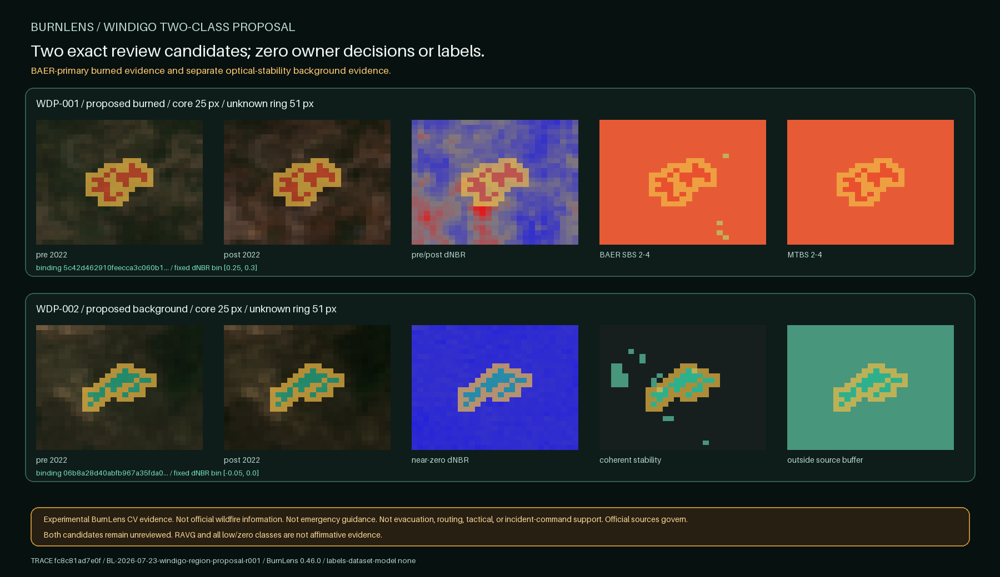

BURNLENS / PHASE TWO / ISSUE #534 / U04
Two Windigo regions are proposed; neither is a label.

Exact candidates
| ID | Proposed class | Core pixels | Unknown ring | Binding SHA-256 | Raster |
|---|---|---|---|---|---|
WDP-001 | burned | 25 | 51 | 5c42d462910feecca3c060b189cffcdd61633a2285934a64250f7b8b0aa4fcb5 | candidate raster |
WDP-002 | background | 25 | 51 | 06b8a28d40abfb967a35fda06202e720b5449814e56ed55523c7fedbd3561aad | candidate raster |
Conjunctive routes
Burned: Eligible exact-pair pixels; transferred coherent four-signal burn screen; BAER SBS classes 2-4 primary; MTBS dNBR6 classes 2-4 corroborating.
Background: Eligible exact-pair pixels; transferred coherent four-signal near-zero stability; outside the union of all delivered BAER/MTBS/RAVG program domains plus 60 m. No delivered low/zero/outside class is affirmative evidence.
The established four-signal burn and stability screens transfer unchanged. No threshold, bin, component size, or tie-break was searched against Windigo.
Boundaries
- The fixed spectral rules, dNBR bins, component target, and tie-break are evidence-coherence rules, not universal burn or severity thresholds.
- BAER/MTBS agreement and paired optical stability are proposal evidence, not independent ground truth.
- The background proposal shows stability during the exact fire-window pair outside conservative source domains; it does not prove land was never burned.
- RAVG modeled effects are context and conservative exclusion only, never affirmative candidate evidence.
- Only one burned and one background proposal are created; owner review and every non-owner promotion gate remain absent.
PROPOSE_EXACT_WINDIGO_TWO_CLASS_REGIONS_KEEP_OWNER_REVIEW_AND_PROMOTION_CLOSED
P2O4-T35-U05 must build one exact two-card owner yes/no/uncertain surface bound to these candidate raster hashes. Both yes decisions are necessary but insufficient.
No ground truth, owner decision, accepted label, dataset, split, baseline, model, metric, accuracy, field validation, official status, endorsement, emergency suitability, or operational readiness exists.
Trace: commit fc8c81ad7e0fff081299e6f72a68c957081f7867 · run BL-2026-07-23-windigo-region-proposal-r001 · source 7e0ede49bcee692c130c6f04fe90898f6c393fb57f64191da1f16c1567b724b2 · BurnLens 0.46.0.